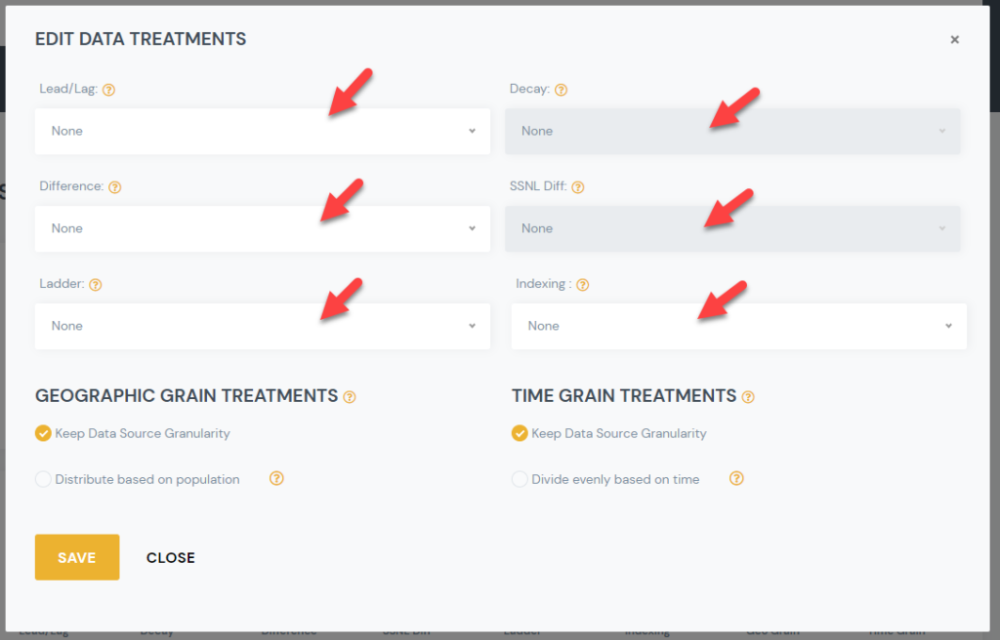
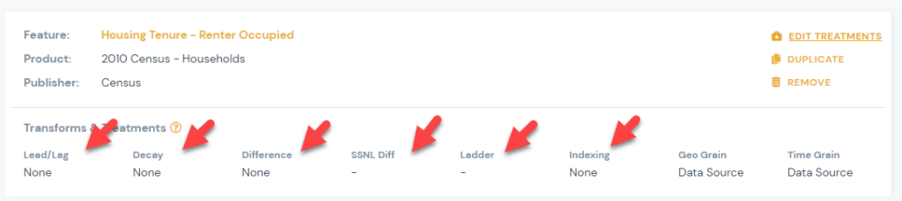

Overview of Data Science Treatments
Overview and description of Data Science Treatments available within the Ready Signal platform.
There are a variety of Data Science Treatments you can apply to features within a signal. These DS treatments can greatly improve the usefulness of your data. Note that these treatments are applied at the individual feature level.
TIP: If you want to see how a features data looks with different Data Science treatments applied, you can duplicate the feature and apply different data science treatments to each one. You will then see them as two different columns in the output, in order to decide which one you want to use.
HOW TO ADD A DATA SCIENCE TREATMENT:
1) From Manage Signal page, click on Edit Treatments link for the feature you would like to apply a Data Science treatment to:
2) Select the Data Science Treatment you would like to apply, and select the desired sub option.

3) You can view your selected treatments for each signal on the manage signals page.

LIST OF DATA SCIENCE TREATMENTS:
Lead/Lag
- The lead and lag operators (also known as forward shift and backshift operators) is a function that shifts (offsets) a time series such that the “lagged” values are aligned with the actual time series
Ad Stock Decayed
- Advertising adstock or advertising carry-over is the prolonged or lagged effect of advertising on consumer purchase behavior.
Differencing
- Differencing is a method of transforming a time series dataset. It can be used to remove the series dependence on time, so-called temporal dependence
SSNL Diff:
- Differencing is a method of transforming a time series dataset. It can be used to remove the series dependence on annual time, so-called seasonal dependence
Ladder Transformations:
- -10 to 10
- The base logarithm is a strong transformation with a major effect on distribution shape. It is commonly used for reducing right skewness and is often appropriate for measured variables.
- Natural Log
- The natural logarithm is a strong transformation with a major effect on distribution shape. It is commonly used for reducing right skewness and is often appropriate for measured variables.
- Exponential
- The exponential transformation is a strong transformation with a major effect on distribution shape. It is commonly used for growth modeling.
- Inversion
- The reciprocal, x to 1/x, with its sibling the negative reciprocal, x to -1/x, is a very strong transformation with a drastic effect on distribution shape.
- Square Root
- The square root, x to x^(1/2) = sqrt(x), is a transformation with a moderate effect on distribution shape: it is weaker than the logarithm and the cube root. It is also used for reducing right skewness, and also has the advantage that it can be applied to zero values.
- Arcsine
- The arcsine transformation (also called the arcsine square root transformation, or the angular transformation) is calculated as two times the arcsine of the square root of the proportion.
- Cube Root
- The cube root, x to x^(1/3). This is a fairly strong transformation with a substantial effect on distribution shape: it is weaker than the logarithm. It is also used for reducing right skewness, and has the advantage that it can be applied to zero and negative values.
- Squared
- Square, x to x^2, has a moderate effect on distribution shape and it could be used to reduce left skewness. In practice, the main reason for using it is to fit a response by a quadratic function y = a + b x + c x^2.
- Boxcox
- At the core of the Box Cox transformation is an exponent, lambda (λ), which varies from -5 to 5. All values of λ are considered and the optimal value for your data is selected; The “optimal value” is the one which results in the best approximation of a normal distribution curve..
- OrderNorm
- The Ordered Quantile (ORQ) normalization transformation, orderNorm(), is a rank-based procedure by which the values of a vector are mapped to their percentile, which is then mapped to the same percentile of the normal distribution. Without the presence of ties, this essentially guarantees that the transformation leads to a uniform distribution.
- Yeojohnson
- The Yeo–Johnson transformation is a power transformation that allows also for zero and negative values of y. lambda can be any real number, where lambda =1 produces the identity transformation.
- The base logarithm is a strong transformation with a major effect on distribution shape. It is commonly used for reducing right skewness and is often appropriate for measured variables.
- The base logarithm is a strong transformation with a major effect on distribution shape. It is commonly used for reducing right skewness and is often appropriate for measured variables.
- The natural logarithm is a strong transformation with a major effect on distribution shape. It is commonly used for reducing right skewness and is often appropriate for measured variables.
- The natural logarithm is a strong transformation with a major effect on distribution shape. It is commonly used for reducing right skewness and is often appropriate for measured variables.
- The exponential transformation is a strong transformation with a major effect on distribution shape. It is commonly used for growth modeling.
- The exponential transformation is a strong transformation with a major effect on distribution shape. It is commonly used for growth modeling.
- The reciprocal, x to 1/x, with its sibling the negative reciprocal, x to -1/x, is a very strong transformation with a drastic effect on distribution shape.
- The reciprocal, x to 1/x, with its sibling the negative reciprocal, x to -1/x, is a very strong transformation with a drastic effect on distribution shape.
- The square root, x to x^(1/2) = sqrt(x), is a transformation with a moderate effect on distribution shape: it is weaker than the logarithm and the cube root. It is also used for reducing right skewness, and also has the advantage that it can be applied to zero values.
- The square root, x to x^(1/2) = sqrt(x), is a transformation with a moderate effect on distribution shape: it is weaker than the logarithm and the cube root. It is also used for reducing right skewness, and also has the advantage that it can be applied to zero values.
- The arcsine transformation (also called the arcsine square root transformation, or the angular transformation) is calculated as two times the arcsine of the square root of the proportion.
- The arcsine transformation (also called the arcsine square root transformation, or the angular transformation) is calculated as two times the arcsine of the square root of the proportion.
- The cube root, x to x^(1/3). This is a fairly strong transformation with a substantial effect on distribution shape: it is weaker than the logarithm. It is also used for reducing right skewness, and has the advantage that it can be applied to zero and negative values.
- The cube root, x to x^(1/3). This is a fairly strong transformation with a substantial effect on distribution shape: it is weaker than the logarithm. It is also used for reducing right skewness, and has the advantage that it can be applied to zero and negative values.
- Square, x to x^2, has a moderate effect on distribution shape and it could be used to reduce left skewness. In practice, the main reason for using it is to fit a response by a quadratic function y = a + b x + c x^2.
- Square, x to x^2, has a moderate effect on distribution shape and it could be used to reduce left skewness. In practice, the main reason for using it is to fit a response by a quadratic function y = a + b x + c x^2.
- At the core of the Box Cox transformation is an exponent, lambda (λ), which varies from -5 to 5. All values of λ are considered and the optimal value for your data is selected; The “optimal value” is the one which results in the best approximation of a normal distribution curve..
- At the core of the Box Cox transformation is an exponent, lambda (λ), which varies from -5 to 5. All values of λ are considered and the optimal value for your data is selected; The “optimal value” is the one which results in the best approximation of a normal distribution curve..
- The Ordered Quantile (ORQ) normalization transformation, orderNorm(), is a rank-based procedure by which the values of a vector are mapped to their percentile, which is then mapped to the same percentile of the normal distribution. Without the presence of ties, this essentially guarantees that the transformation leads to a uniform distribution.
- The Ordered Quantile (ORQ) normalization transformation, orderNorm(), is a rank-based procedure by which the values of a vector are mapped to their percentile, which is then mapped to the same percentile of the normal distribution. Without the presence of ties, this essentially guarantees that the transformation leads to a uniform distribution.
- The Yeo–Johnson transformation is a power transformation that allows also for zero and negative values of y. lambda can be any real number, where lambda =1 produces the identity transformation.
- The Yeo–Johnson transformation is a power transformation that allows also for zero and negative values of y. lambda can be any real number, where lambda =1 produces the identity transformation.
Indexing
- Standardized
- Scaling: each variable in the data set is recalculated as (V – min V)/(max V – min V), where V represents the value of the variable in the original data set. This method allows variables to have differing means and standard deviations but equal ranges. In this case, there is at least one observed value at the 0 and 1 endpoints.
- Seasonally Adjusted
- Seasonal adjustment is a statistical technique that attempts to measure and remove the influences of predictable seasonal patterns to reveal how employment and unemployment change from month to month.
- Min Max Scaling
- Dividing each value by the range: recalculates each variable as V /(max V – min V). In this case, the means, variances, and ranges of the variables are still different, but at least the ranges are likely to be more similar.
- Scaling: each variable in the data set is recalculated as (V – min V)/(max V – min V), where V represents the value of the variable in the original data set. This method allows variables to have differing means and standard deviations but equal ranges. In this case, there is at least one observed value at the 0 and 1 endpoints.
- Scaling: each variable in the data set is recalculated as (V – min V)/(max V – min V), where V represents the value of the variable in the original data set. This method allows variables to have differing means and standard deviations but equal ranges. In this case, there is at least one observed value at the 0 and 1 endpoints.
- Seasonal adjustment is a statistical technique that attempts to measure and remove the influences of predictable seasonal patterns to reveal how employment and unemployment change from month to month.
- Seasonal adjustment is a statistical technique that attempts to measure and remove the influences of predictable seasonal patterns to reveal how employment and unemployment change from month to month.
- Dividing each value by the range: recalculates each variable as V /(max V – min V). In this case, the means, variances, and ranges of the variables are still different, but at least the ranges are likely to be more similar.
- Dividing each value by the range: recalculates each variable as V /(max V – min V). In this case, the means, variances, and ranges of the variables are still different, but at least the ranges are likely to be more similar.